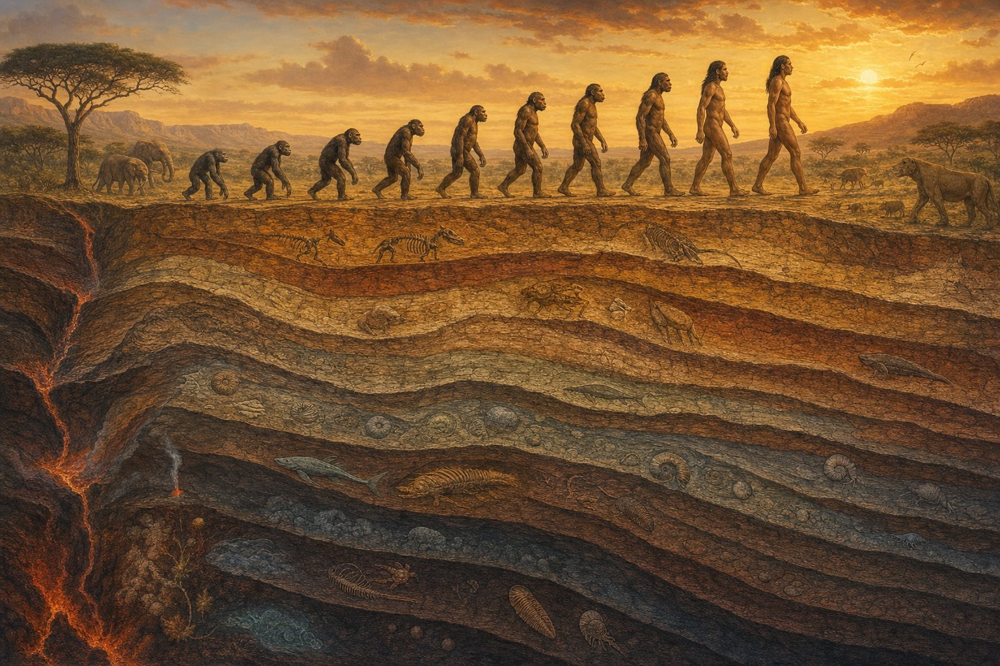

The Long Walk
From a forest ape that first stood upright to a species that mapped its own genome — scroll the deep-time timeline of human evolution, then follow the DNA trail of where we travelled.
A seven-million-year story, told from the evidence
Human evolution is the story of how our lineage split from the other African apes around seven million years ago and, through dozens of now-extinct species, eventually produced Homo sapiens. It is not a straight march from "ape to human" but a branching bush: upright-walking australopithecines like Lucy, tool-making early Homo, the far-travelling Homo erectus, cold-adapted Neanderthals, the DNA-only Denisovans, and more — many of whom overlapped, met, and interbred.
Hominin History brings that evidence together in one place. Scroll the deep-time timeline below to meet each species; open the migration atlas to explore more than 19,000 ancient-DNA records alongside migrations established by genome-wide research; put any two species head-to-head in the comparator; or dig into the articles for source-backed deep-dives. Everything here is compiled from museum collections and peer-reviewed research, with debates flagged honestly rather than smoothed over.
Why I built Hominin History
Black bears and arrowheads in the Carolina woods, the last wild red wolves on the coast, Lucy in New York, and a wall of 404 dire wolf skulls at the La Brea Tar Pits — the personal journey that turned into this site.
About the author →Scroll through our ancestors and cousins
Each species below is a stop on the journey, arranged from the deepest past at the top to the present day at the bottom. Tap any card to open its full multi-section report — anatomy, brain, behaviour, key fossils and how it relates to us.


Ardi


Handy Man


Heidelberg Man

Neanderthals

Star Man


Where did Homo sapiens go next?
Once modern humans walked out of Africa, the story shifts from fossils to genomes. Explore 19,029 ancient-DNA records, spatio-temporal clusters, candidate connections and the published evidence for the great migrations that peopled the planet.
Explore ancient human migrations →The Etruscan genome project
A distinctive non-Indo-European language—but a broadly local Iron Age ancestry profile. Explore 78 Etruscan-labelled AADR individuals across 14 localities, with an interactive map and evidence-graded conclusions.
Investigate the Etruscan evidence →Compare any two hominins, side by side
How much taller was a modern human than Lucy? Whose brain was bigger, a Neanderthal's or ours? Pick any two species and see them measured against each other — to-scale height, brain size, timeline and the facts that set them apart.
Open the species comparator →The world's great fossil sites
Almost everything we know comes from a scatter of caves, gorges and lake beds. Explore an interactive world map of the sites that produced the fossils — from Lucy at Hadar to the Denisova Cave — each pin opening the full story.
Explore the fossil-sites map →The molecules that made us
Evolution isn't only in the bones. Spin real 3D structures of the proteins behind our story — FOXP2, the "language gene"; the haemoglobin that malaria reshaped; the altitude gene we borrowed from Denisovans.
Open the 3D protein viewer →Which hominin are you?
Are you a loyal Neanderthal, a globe-trotting Homo erectus, or the resourceful Hobbit? Answer ten quick questions and meet the ancient human who shares your personality — every result grounded in the real fossil record.
Take the quiz →Deep-dives on the species, sites & science of human evolution
Browse all →More than 60 source-backed deep-dives — from Neanderthals vs Denisovans to Out of Africa, the giants of the tar pits, and the story behind this site.